05 Chapter 05 — Data Engineering for Sport Video
Ingest, provenance, the one-spine schema, DuckDB querying, and the golden-fixture regression harness
5.1 The Pipeline That Produces Your Numbers
Vision models get the attention; the data pipeline is what makes their output usable, reproducible, and citable. In a professional team, the analyst's day is mostly this pipeline: ingest footage, slice it, extract frames, run models, join rows, and answer a coach's question before the next session. This chapter is the engineering layer under every other chapter.
The core idea is one data spine: a single canonical coordinate + event schema that every downstream analysis consumes. Second Spectrum's documented differentiator is exactly this — one capture pipeline feeding broadcast, coaching, and data feeds, so there is nothing to reconcile. For an open, replicable version of that architecture, the spine is: kloppy/EPTS-style tracking rows + event rows in a queryable store. The spine is a contract, not a file format. Every downstream table — tracks, events, frame metadata, model outputs — shares the same join key: (clip_id, frame_idx, pts_s).
Everything in this chapter is measured on our own fixture: the probe output, the 6-frame golden extraction (hashes in manifest.json), and the DuckDB query results (experiments/c05-ingest/outputs/). The methodology itself is source-backed — it mirrors the documented single-source-of-truth architecture across pro providers (Second Spectrum, SkillCorner, Stats Perform/Opta Vision) and the open standards those providers align to (kloppy, SPADL, FIFA EPTS, MOTChallenge).
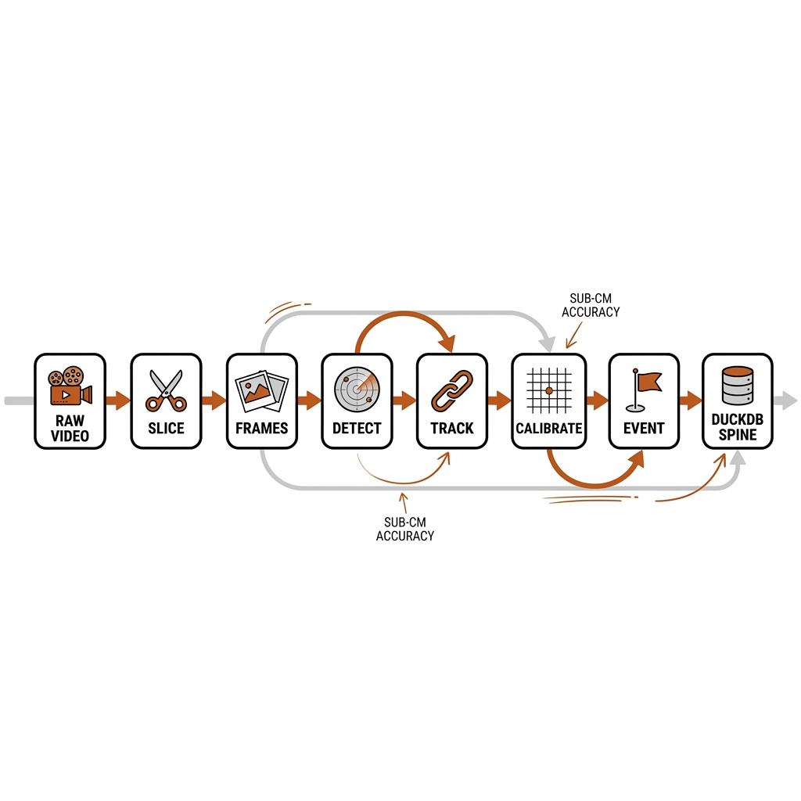
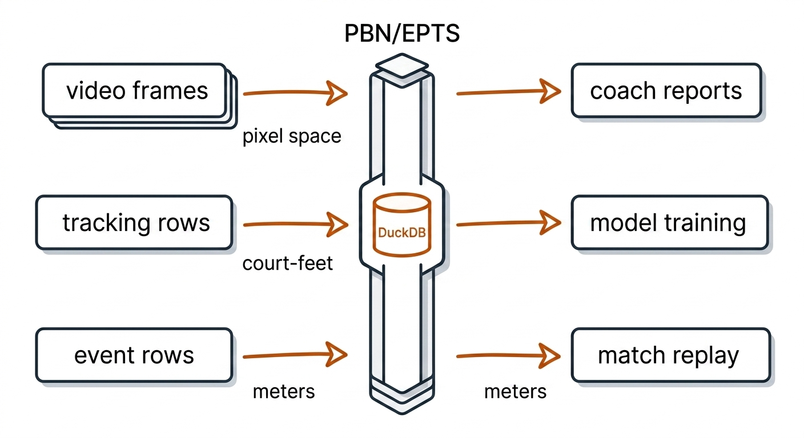
The pipeline has four coarse responsibilities, not ten independent tools. First, media ingest turns the camera master into a frame-exact analysis clip and a frame-index map. Second, perception detects, tracks, and calibrates the scene into court-metre coordinates. Third, eventing spots contacts, serves, tackles, and play-the-ball restarts. Fourth, spine assembly joins the rows and runs the regression harness that makes the whole thing reproducible. If any stage changes the join key or the coordinate space, every downstream number is suspect.
5.2 Ingest: FFmpeg and the Derivatives
Raw match footage is large, full of dead time, and encoded for delivery. The first derivative is the analysis clip: the window of play you actually analyze. Our fixture pb-003 is a 30-second doubles rally window cut from a PPA broadcast. The probe tells the truth about what you are actually working with:
clip: av1 1920x1080 @30.00fps 30.0s 1786kbps
golden frames extracted: 6 (hashed)
track rows loaded: 8862
on-court rows: 3416 of 8862
peak on-court players per frame: 6 (doubles = 4; >4 or <4 -> fragmentation)Three facts from this one run that every practitioner should internalize:
- The codec matters. AV1 at 1,786kbps is a YouTube transcode, not a capture. It compresses fine for humans and poorly for machine vision — when you control the capture, use H.264/HEVC 4:2:2 10-bit at 50Mbps+ for 4K60.
- Frame rate reality differs from assumptions. The clip is 30fps and 900 frames, not 25fps. Every pipeline assumption must be re-derived from the probe, never from memory.
- Fragmentation is measurable in the data spine. 8,862 track rows but only 3,416 on-court; peak 6 on-court players in a 4-player doubles match. The spine exposes tracker quality before you ever claim anything from it.
FFmpeg discipline (measured 2026-08-30 on this machine): the seek-vs-copy folklore has a hard answer. Using an 89-frame slice of our own fixture, input seek + re-encode and output seek both produce 89 frames (frame-accurate); -c copy snaps to the nearest keyframe and produces 109 frames — the worst option for analysis, because your timestamps no longer match the clip metadata. Rule of thumb: input-seek + re-encode for anything that feeds a model; -c copy only when you must avoid a re-encode and can tolerate keyframe granularity. Slug every derived asset with deterministic names; never edit a raw master in place.
Decode hardware: -hwaccel videotoolbox works for decode, but on 1080p-short clips software decode is actually faster (verified ~33× realtime vs ~5.4× for hwaccel) — hwaccel earns its keep on 4K/long files and for CPU offload. Note there are no *_videotoolbox decoder names; those are encoders (h264/hevc/prores_videotoolbox). Reading frames in-process: decord is dead (last release June 2021; FFmpeg 7+ breakage; memory leak issues unmerged) — use PyAV 18.1.0 (BSD-3; check the GPL build caveat on the wheel) or TorchCodec 0.16.0 (stable ABI since 0.12; macOS decode is CPU-only — no VideoToolbox offload; CUDA on Colab).
The ingest recipe has four internal products that are easy to skip and expensive to reconstruct later: a transcoded clip with frame-accurate boundaries, a metadata probe (ffprobe) with codec / fps / bitrate, a frame map that maps frame index to presentation timestamp, and an event log skeleton that is populated in later chapters. Treat them as first-class artifacts; each gets its own SHA-256 and its own entry in the manifest.
5.2b The Frame-Index Problem: Which Frame Is the Rally Start?
The most common silent failure in sport video pipelines is not a bad model; it is a frame index that does not mean what you think it means. A coach asks, "Show me frame 150 of the rally." The detector's frame 150 is the 150th decoded frame of the clip. The source broadcast's frame 150 is 150 frames after the match start. The FFmpeg frame=150 from select=eq(n\,150) is 0-based in the clip. The MOTChallenge export must be 1-based. If these are not aligned, a ball-contact event attributed to frame 150 is actually somewhere else.
The fix is a frame index map emitted at ingest, not inferred later. The frame map is a CSV with three columns: frame_idx (0-based in the clip), pts_s (presentation timestamp in seconds), and pict_type (I/P/B). Every downstream artifact — extracted PNG, track row, event row — carries clip_id + frame_idx + pts_s. When you re-encode the clip for a model, the frame map is recomputed; the old and new maps are both kept.
For the rally-start problem specifically, the frame map is not enough. A clip boundary is a human decision: serve toss, ball contact, first tackle, play-the-ball. The spine therefore stores a rally_window (or set_of_six_window) table with columns clip_id, start_frame_idx, start_pts_s, end_frame_idx, end_pts_s, annotated_by, evidence_refs. When a downstream query joins tracks to a rally, it joins on the window, not on a filename convention.
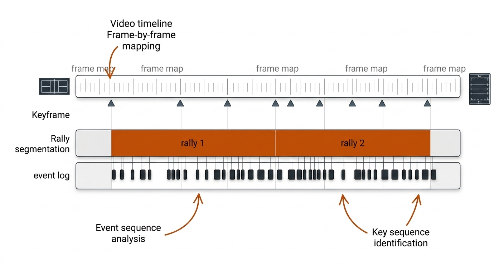
In the rugby arm, the same issue appears as set-of-six alignment. A broadcast replay might start in the middle of a tackle; the clip metadata says "frame 0" but the statistical event is the fifth tackle of a set that began 20 seconds earlier. The NRL-set rows therefore carry set_start_frame_idx and tackle_in_set so that the downstream EPV model knows the field position at the start of the set, not just the moment of contact.
5.3 Provenance: SHA-256 and Manifest
Every derived asset carries a hash and a manifest link back to its source. Our lab computes SHA-256 on the source clip, each extracted golden frame, and the tracks CSV; the manifest is the audit chain.
The distinction that matters: path hash vs content hash. A path hash proves the file is where you think it is; a content hash proves it is what you think it is. For evidence, use content hashes — a re-encode of the same footage is a different artifact, and your metrics.json must say which one it claims to describe.
def sha256(path: Path) -> str:
h = hashlib.sha256()
with open(path, "rb") as f:
for chunk in iter(lambda: f.read(1 << 20), b""):
h.update(chunk)
return h.hexdigest()The manifest is a JSON file per clip. It records the source clip hash, the derived clip hash, the slice boundaries, the FFmpeg version, the frame map path, and the produced timestamp. It is immutable: if you re-slice or re-encode, you mint a new manifest with a supersedes pointer to the parent. This is the row-level provenance discipline that makes the rest of the chapter trustworthy.
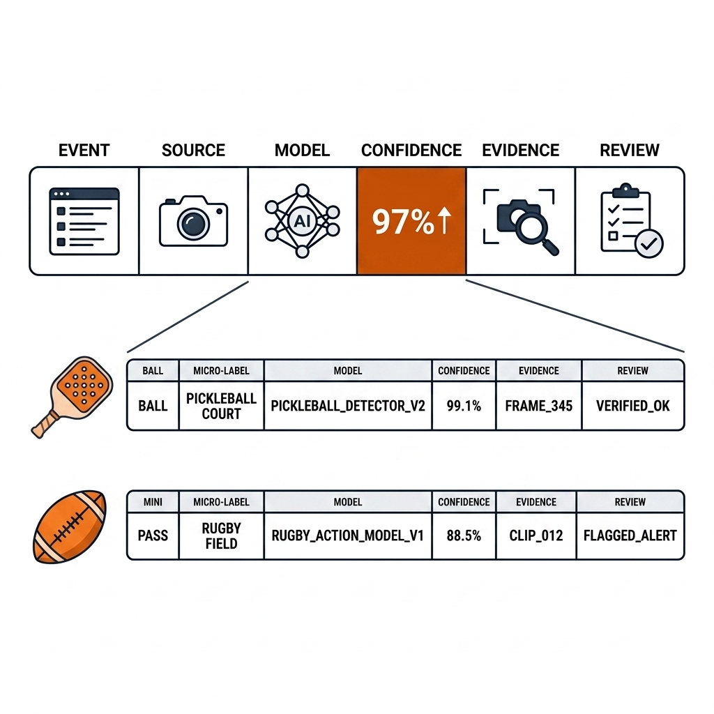
Provenance breaks in predictable ways: re-encoding without updating the hash, a metadata-only rewrite that relocates the moov atom, non-deterministic detector outputs, and sidecar drift where the manifest says 900 frames but the directory has 898. The regression harness in §5.6 catches the last one; the manifest catches the rest.
5.4 The One Spine: Coordinates, Events, and the Row Contract
Two tables, one philosophy:
- Tracks (continuous):
frame, track_id, x_px, y_px, x_court_m, y_court_m, velocity, on_court. Pixel space is evidence; court metres are canonical. - Events (discrete):
frame, t_s, event_type, actor, confidence, evidence_ref. Events reference the rows they were derived from (the claims-register idea at row level).
The join key is the whole point: (clip_id, frame_idx, pts_s). It appears in every track row, every event row, and every frame file. This is what lets DuckDB ASOF-join a million track rows to a few hundred event rows, and what makes the golden-fixture harness possible. The PBN event dictionary in this repo adds 31 columns including evidence_level, evidence_refs, confidence, human_correction, review_required, and coaching_note. Those are not decoration; they are the filter that keeps the query layer honest.
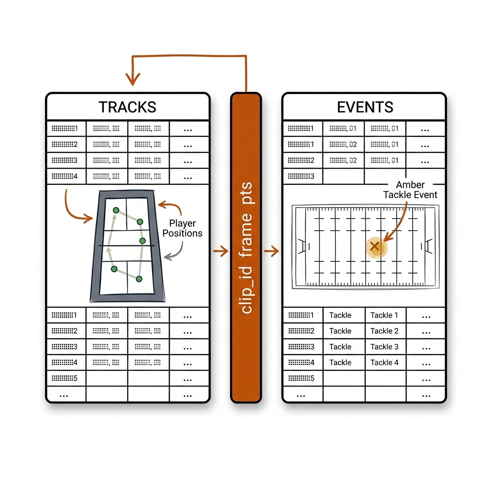
Coordinate hierarchy (in decreasing trust): metric court metres (from calibration, ch. 6) → feet (our court model, ch. 3) → pixels (raw detection). Never mix: every table declares its coordinate space in its schema. The open standards to align with are kloppy (PySport ingestion/representation), SPADL (event model, the direct ancestor of our PBN schema), FIFA EPTS (tracking I/O contract so club tools can ingest your output directly), and MOTChallenge CSV (for benchmark-compatible track exports). MOTChallenge uses 1-based frames and 10 exact columns; the spine is 0-based, but the MOT export is a projection, not a different truth.
5.4b Parquet vs JSON: The Storage Trade-off
The spine is stored in two physical layers: JSON manifests for human-readable provenance, and Parquet for the row data. The trade-off is not performance alone; it is what each format promises.
JSON is the right format for the manifest because it is small, human-readable, and versioned by git. It is the wrong format for 8,862 track rows because it is row-oriented, uncompressed, and slow to query. Parquet is columnar, typed, and predicate-pushdown friendly. DuckDB can read a Parquet lake of millions of rows without loading anything into memory. The rule: JSON for contracts and metadata, Parquet for rows, filesystem for bytes, Zarr for dense arrays such as court-occupancy heatmaps.
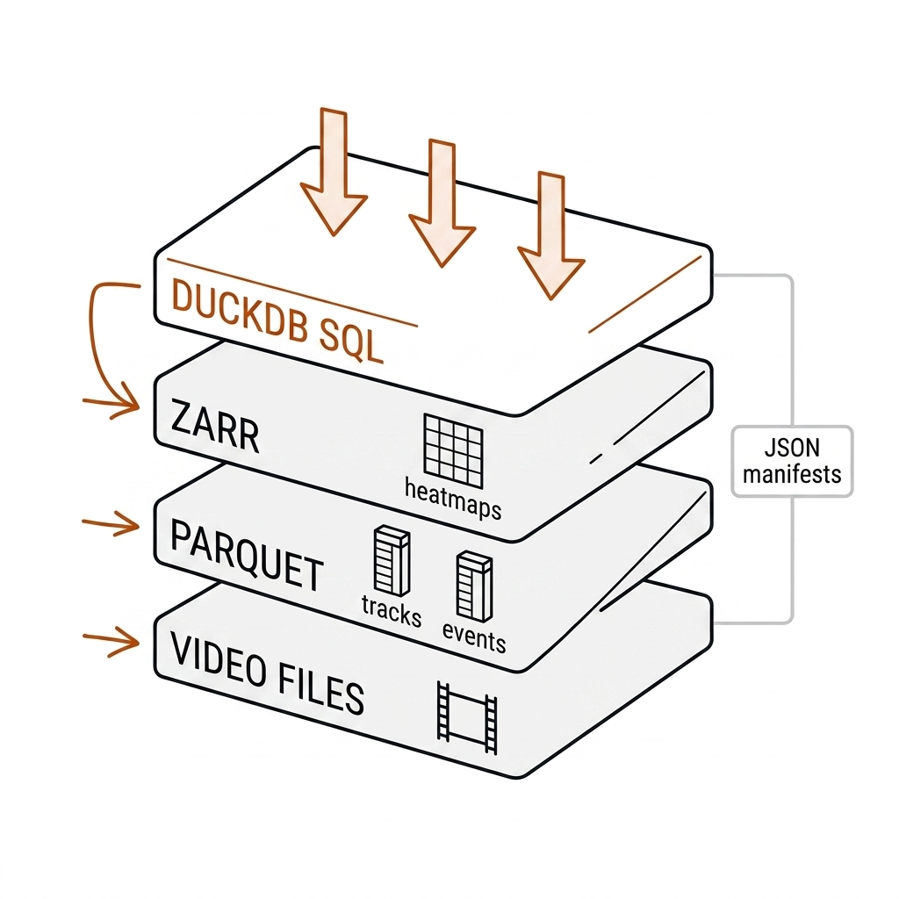
For version control, the manifest is the boundary: git-lfs or DVC handle footage and large derived clips, but the manifest itself is small enough for plain git. The golden-fixture PNGs (a few MB) are also git-safe; the 900-frame source clip is not. DVC removes the GitHub bandwidth tax by moving bytes through your own bucket, while the manifest keeps the audit chain in git.
5.5 Querying the Spine: DuckDB (W1.3 Lab)
Parquet + DuckDB is the default storage for track rows: columnar, queryable in-process, no server. Our lab loads the tracks CSV into DuckDB and proves the SQL-level analytics:
import duckdb
con = duckdb.connect("spine.duckdb")
con.execute("""CREATE OR REPLACE TABLE tracks AS
SELECT * FROM read_csv_auto(?)""", [tracks_csv])
con.execute("""CREATE OR REPLACE VIEW frame_summary AS
SELECT frame,
COUNT(*) FILTER (WHERE on_court = 1) AS on_court_count,
COUNT(*) AS total_count
FROM tracks GROUP BY frame ORDER BY frame""")
peak = con.execute("SELECT MAX(on_court_count) FROM frame_summary").fetchone()[0]Queries that matter, in the order teams actually ask them:
- "How many on-court players per frame, and where does the tracker break?" —
frame_summaryabove; the 4-player doubles expectation is the regression test. - "All rallies where a serve was followed by a third-shot drop into the kitchen." — join tracks → events on frame; filter on event_type + court zone.
- "Spacing between partners during kitchen exchanges, by frame window." — window function over track rows by court coordinates.
DuckDB 1.5.5 handles 1M-row tables trivially and scales to billions via out-of-core spill. The query primitive that makes the spine powerful is ASOF JOIN: for every track row, find the nearest event at or before it, without a slow lateral join. For rugby, the same pattern finds the most recent tackle event for every player position sample, which is the input to an EPV surface.
SELECT t.clip_id, t.frame_idx, t.x_m, t.y_m, e.event_id, e.shot_type, e.contact_state
FROM tracks t
ASOF JOIN events e
ON t.clip_id = e.clip_id AND t.pts_s >= e.pts_s
WHERE t.class = 'ball';5.6 Golden Fixtures and the Regression Harness
The golden fixture is the version-control trick for vision: a small, hand-reviewed set of frames where the truth is known and the answer is checked after every pipeline change. Our 6-frame fixture (pb-003-frame-01..06) covers serve → return → third shot → kitchen transition → dinking exchange → rally termination. The harness rule:
After any model or pipeline change, re-run the fixture. If the outputs change in a way that is not understood, the change is not allowed.
This is how a lab survives an LLM-assisted workflow: the fixture is the unit test for perception. Each golden frame has an expected-output JSON (boxes, counts, confidence bands) and a tolerance (bbox IoU ≥ 0.5, count equality, class equality). The fixture manifest pins the detector version, weights hash, FFmpeg version, and the Python package commit. CI runs the suite; any metric drop fails the build loud. Golden outputs are re-blessed deliberately with a commit message naming the model change — never silently regenerated.
It is also the seed of the public contribution in dataset/pb003/ — the same frames, versioned, with keypoint/ball/event labels, that anyone can evaluate against (see the dataset README and schema). The fixture is small enough to ship in git; the full source clip is not.
5.7 The Full Ingest Recipe (Copy This)
1. probe : ffprobe raw.mp4 -> codec, fps, duration, bitrate (know your input)
2. slice : ffmpeg -ss START -to END -i raw.mp4 -c:v libx264 -crf 18 -an clip.mp4
(input seek + re-encode; never -c copy for analysis clips)
3. frame map : ffprobe -show_entries frame=best_effort_timestamp_time,pict_type
-of csv clip.mp4 -> clip.frame_map.csv
4. frames : ffmpeg -i clip.mp4 -vsync 0 frames/f_%06d.png
5. manifest : SHA-256 every derived asset; write manifest.json
6. detect : YOLO/RF-DETR -> detections (px space) -> report writes rows
7. track : ByteTrack/BoT-SORT -> track_id on detections -> tracks.parquet
8. calibrate : court homography -> x_court_m, y_court_m per row (ch. 6)
9. event : state machine (ch. 3/19) -> events.parquet
10. spine : DuckDB views join tracks+events; golden-fixture regression check
11. query : answer the coach's question in SQL5.8 Transfer Note: Rugby League Data Spine
Everything above transfers to rugby with one substitution: the coordinate model is the pitch, not the court. NRL tracking data is proprietary (verified: Stats Perform/Opta is the official pipe; no public NRL tracking corpus exists — only the request-gated CEA R7 Sevens set), so the spine's track table for rugby is either (a) self-extracted from broadcast clips like our E08/E14 runs, or (b) built from event data via nrlR (CRAN) + UselessNRLStats cleaned CSVs, with Rugby League Project IDs as the entity-resolution key. The pitch model is standard: 100m × 68m, coordinates relative to the try line, tackle state as an event-table column. DuckDB queries are identical except the court-zone join becomes a pitch-zone join.
The rugby event row also inherits the PBN evidence discipline. Every tackle, play-the-ball, and kick must carry source, model, confidence, and evidence_refs, because the public data is scraped and the CV data is self-extracted. The entity-resolution key is the Rugby League Project match ID, not the team name string.
5.8b The pb-003 Dataset: 900 Frames, Six Golden Frames, and a 596-Frame Target
The pb-003 dataset is the book's public contribution. It currently exists as a schema, a source clip, and a small golden seed. The source clip is a 30-second, 900-frame, 30fps doubles rally from a PPA broadcast. The detector/tracker baseline run (E02) produced 8,862 track rows and 3,416 on-court rows across those 900 frames, with 26 unique ByteTrack IDs for four actual players — a measurable fragmentation signal that the dataset is designed to help fix.
The golden seed is six frames: pb-003-frame-01..06, with content hashes in the manifest, and 12 event review rows from the PBN Data Dictionary. Those six frames are the regression harness for the perception pipeline. The README calls for a Tier-1 annotation pass: ball positions on every frame where the ball is visible, court keypoints every 50 frames, and player boxes on all 900 frames (or a 300-frame active-learning spread plus interpolation). The "596-frame annotated corpus" is the planned next milestone: a contiguous, contact-labeled block of frames that is large enough to train a first shot-type classifier and a ball-tracker head. It is not on disk today. The honest current state is a 900-frame source clip with a six-frame golden seed and a 12-row event review.
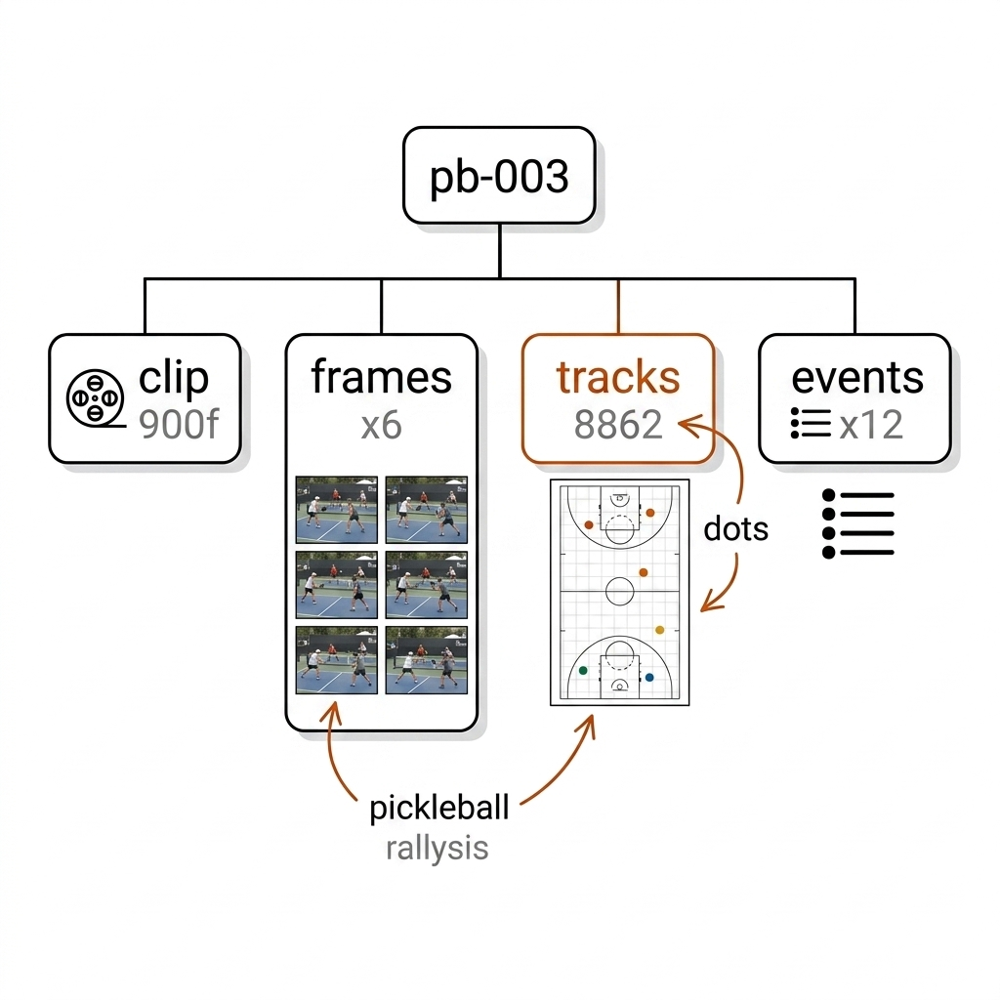
The dataset's license decision is also honest: the labels can be CC-BY-4.0, but the frames cannot be redistributed because they are PPA broadcast footage. The recommended distribution is labels + frame indices + derived-clip SHA-256, with the reader supplying their own licensed copy of the broadcast. A separate amateur camera fixture is the long-term solution for freely redistributable frames.
5.8c The NRL-Set Row: Rugby League Event Schema
There is no public NRL tackle-by-tackle event corpus, so the book proposes an NRLSheet row schema that makes the spine complete for rugby league. The schema is designed to feed a Kempton-style EPV model and to be joinable to the Rugby League Project entity graph. A proposed row looks like this:
match_id, set_id, tackle_in_set, ptb_x_m, ptb_y_m, possession_team,
ball_carrier_rlp_id, tackle_rlp_ids[], outcome, source, evidence_level,
evidence_refs, confidence, review_requiredEvery field is either measured from CV (play-the-ball location from the homography), scraped from nrlR (match/set/outcome), or hand-coded by an analyst (review_required). The source column is not a footnote; it is a join key to the evidence manifest. An EPV query can therefore be written as a single SQL statement: average next-score value grouped by (ptb_x_m, ptb_y_m, tackle_in_set), filtered to rows where evidence_level is not simulated.
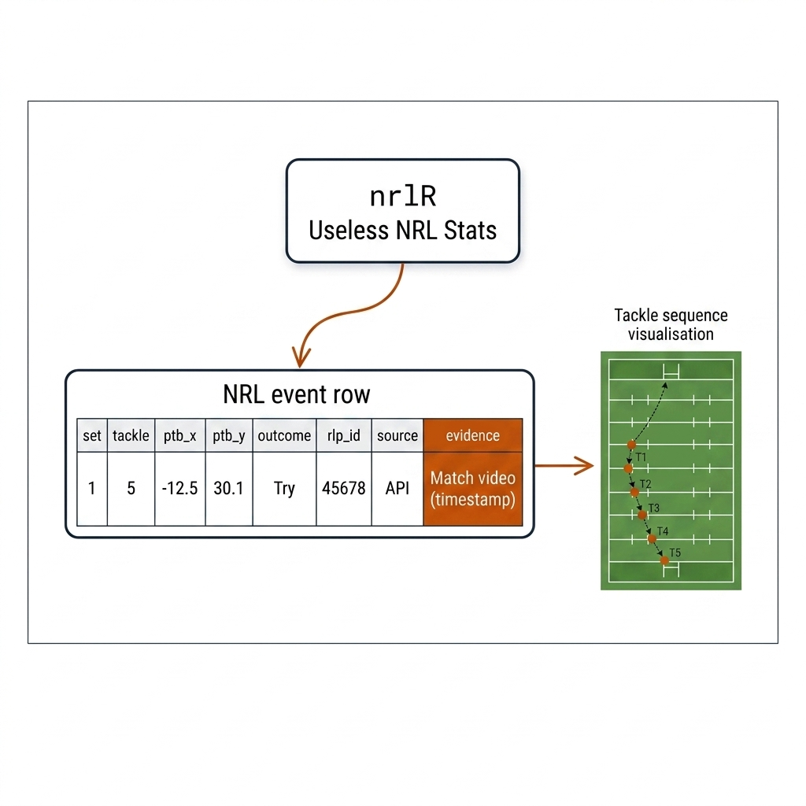
This is a design target, not a measured output. The book has not yet produced a full NRL-set row file; the schema is ready so that the first manually coded set-of-six can be stored in the same spine as the pickleball rows.
5.8d Honest Limits: 60fps vs 25fps and the 2 FPS VLM Sampling Problem
Frame rate is an assumption that every downstream number inherits. Broadcast sport is usually 25fps (PAL) or 30fps (NTSC/PPA web); high-end capture is 60fps or 120fps. The difference between 60fps and 25fps is 14ms per frame, which is small for tactical analysis but large for ball-contact physics. A pickleball serve contact lasts roughly 4ms; at 60fps the ball is on the paddle for less than one frame. At 25fps the contact frame is a blur, and the exact contact frame is ambiguous by ±20ms. The honest response is to not claim sub-frame timing from 25fps video.
The 2fps VLM sampling problem is worse. A vision-language model that ingests one frame every half-second is cheap, but it will almost always miss the actual contact frame. A serve, a dink, a tackle, or a play-the-ball occurs between the sampled frames. The model then hallucinates the event timing from context. The right use of a VLM is not to spot contacts; it is to narrate a rally after the event rows have been anchored by a high-frame-rate detector or a temporal-difference state machine. If a VLM is the only source, the event row must carry a low confidence and a large review flag.
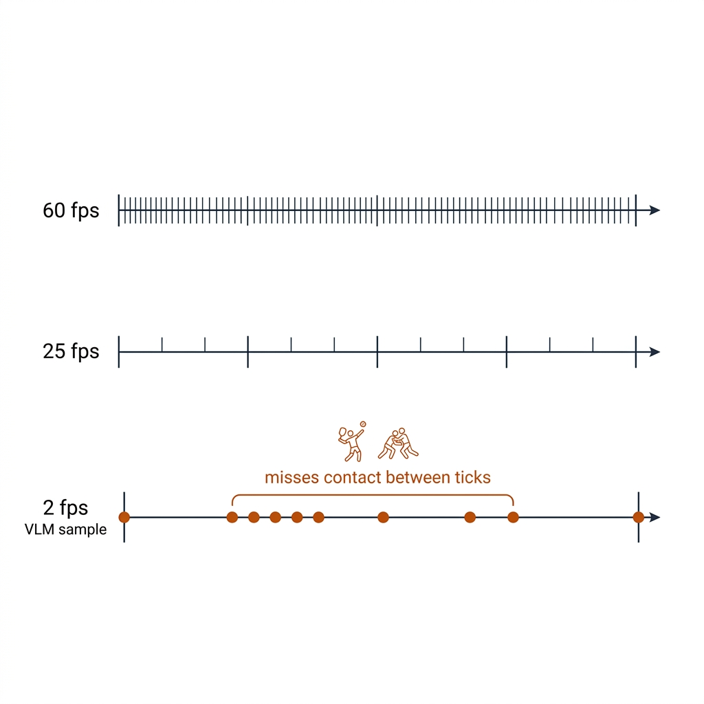
The rugby broadcast arm is typically 25fps. The EPV model does not need millisecond timing; it needs field position at the start and end of a set of six. The 25fps limit is therefore acceptable for coarse value modelling, but it is not acceptable for tackle-impact biomechanics or for play-the-ball speed measured from video. Those claims need 60fps+ capture or sensor data.
5.8e The Ten Use Cases: Data Engineering in Production
The use cases below are the applied bridge from the pipeline mechanics above to the two sports. They follow three categories: Category I — The Spine in Production (01-03), Category II — Identity, Integrity & Storage (04-06), and Category III — Feeding the Downstream Consumers (07-10). Each case pairs a pickleball and a rugby league application, carries its storage math, and carries its evidence label: measured where the book lab ran it, proposed where the schema is a design target, [verify] where the number is a practitioner estimate.
Category I: The Spine in Production (01-03)
UC 01 — The One Spine in Production: One Question, One SQL Query
The practical problem: a coach asks "show every rally where the far-left player was inside the non-volley zone at contact," and the analyst's answer must be a query, not a week of scripting. The mechanism is the join key (clip_id, frame_idx, pts_s) carried by every track row and event row, with the coordinate chain pixel → court feet → court metres (homography from ch. 6; ×0.3048 to metres, canonical). The storage math is why this scales: a track row is ~80 bytes in Parquet (pruned columns, Snappy compression), so 1M rows ≈ 80 MB; a 90-minute NRL broadcast at 25fps is 135,000 frames × ~16 tracked entities ≈ 2.2M rows ≈ 175 MB [verify — practitioner estimate; pb-003 measured 8,862 rows / 900 frames ≈ 9.8 rows per frame]. An entire season fits in laptop RAM; DuckDB's ASOF JOIN resolves each track row to its governing event without a lateral join.
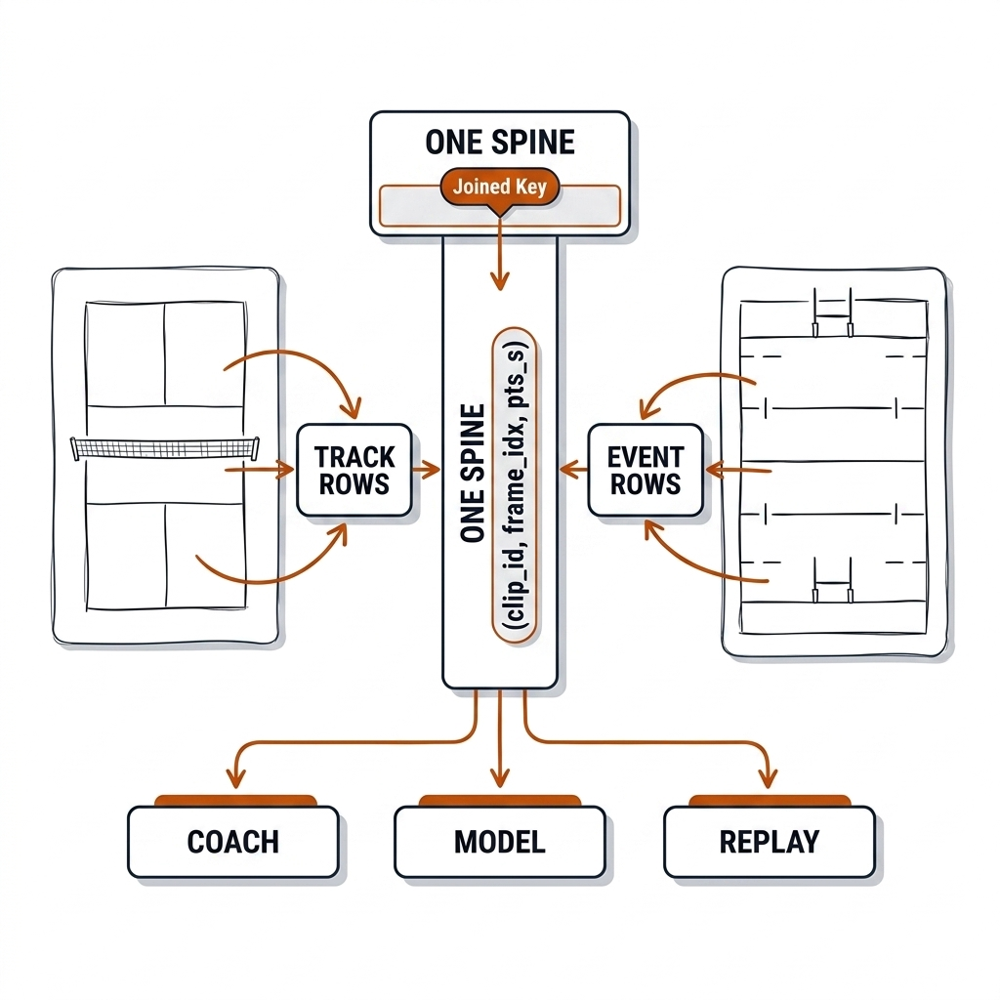
Payoff: the analyst answers the coach between sessions, in SQL, with evidence refs attached — the single-source-of-truth pattern the pro providers sell, rebuilt in the open.
UC 02 — The pb-003 Pipeline: 900 Frames, 6 Golden Frames, 8,862 Rows
The practical problem: without a frozen, measured fixture, every pipeline change is an opinion. The mechanism is the measured pb-003 run (measured, E02): a 30-second, 900-frame, 30fps AV1 doubles clip; 8,862 track rows; 3,416 on-court rows; 26 unique ByteTrack IDs for four actual players; 6 golden frames with SHA-256 hashes in the manifest. The math is diagnostic: tracker ID inflation = 26/4 = 6.5× the true player count, and on-court yield = 3,416/8,862 = 38.5% of rows survive the on-court filter — two numbers the spine exposes before anyone claims anything from it. Storage cost of the whole fixture: six PNGs plus expected-output JSON, a few MB, git-safe.
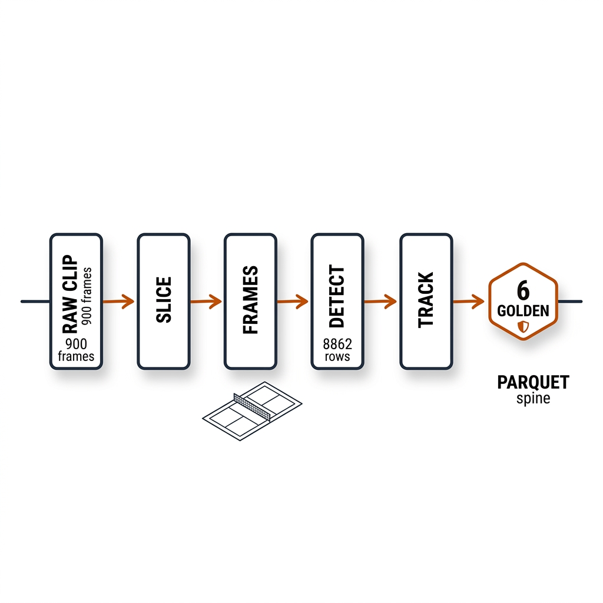
Payoff: "did we fix it?" becomes a test with a pass bar, not a debate — the harness runs in seconds on every change and fails loud.
UC 03 — NRL Event Rows: The Proposed Set-of-Six Schema
The practical problem: there is no public NRL tackle-by-tackle event corpus (verified: Stats Perform/Opta is the proprietary pipe), so an open EPV model is impossible until the rows exist. The mechanism is the proposed NRL-set row (proposed — design target, not yet a produced file): match_id, set_id, tackle_in_set, ptb_x_m, ptb_y_m, possession_team, ball_carrier_rlp_id, tackle_rlp_ids[], outcome, source, evidence_level, evidence_refs, confidence, review_required, with Rugby League Project IDs as the entity-resolution key and source as a join key to the evidence manifest. The storage math inverts intuition: at ~300 play-the-balls per match and ~200 matches a season, a full NRL season is ~60k rows — a few MB. The scarce resource is annotation labour, not storage; the schema exists so the first manually coded set-of-six lands in the same spine as the pickleball rows.
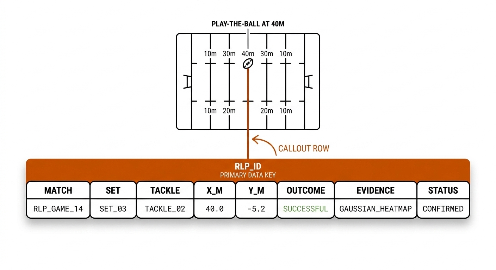
Payoff: the first open, evidence-carrying rugby league event table — the feedstock for the EPV chapter (ch. 22) and the ratings chapter (ch. 21).
Category II: Identity, Integrity & Storage (04-06)
UC 04 — Frame-Index Alignment: One Instant, Three Numberings
The practical problem: the detector's frame 150, the broadcast's frame 150, and the MOT export's frame 151 are the same physical instant — or silently not. The mechanism is the ingest-time frame map (frame_idx 0-based, pts_s, pict_type from ffprobe), with the MOT export as a 1-based projection and the rally window as a human annotation on top. The math is the measured seek result (measured 2026-08-30, M4 Max): on a GOP-30 clip, input-seek + re-encode and output seek both yield 89 frames for a 1.5 s window; -c copy yields 109 — it snapped back to the 4.0 s keyframe, injecting 20 extra frames (~0.67 s at 30fps) before the moment asked for. Every downstream frame_idx is then wrong by up to a GOP [verify per-encode GOP size; 30 measured on our fixture].
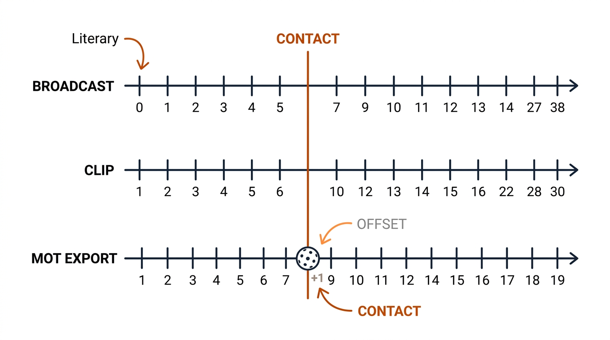
Payoff: the evidence clip a coach watches starts where the event actually is — proven by the frame map, not assumed from the filename.
UC 05 — Parquet vs JSON: The Storage Trade-off
The practical problem: 8,862 track rows as JSON is a row-oriented, untyped, full-scan blob; as a manifest it is exactly right. The mechanism is the four-layer rule: JSON for contracts and metadata (small, human-readable, git-versioned), Parquet for rows (columnar, typed, predicate pushdown, row-group stats), the filesystem for video bytes (content-hashed, manifest-tracked), Zarr for dense arrays (heatmaps, gridded occupancy). The math: a track row costs ~150-250 bytes as JSON text vs ~30-60 bytes compressed in Parquet — 4-8× smaller, and column pruning means a query reading x_m, y_m never touches the bbox bytes [verify exact ratios on your corpus — practitioner estimate; direction is architectural]. DuckDB reads the lake in-process, zero-copy, no server.
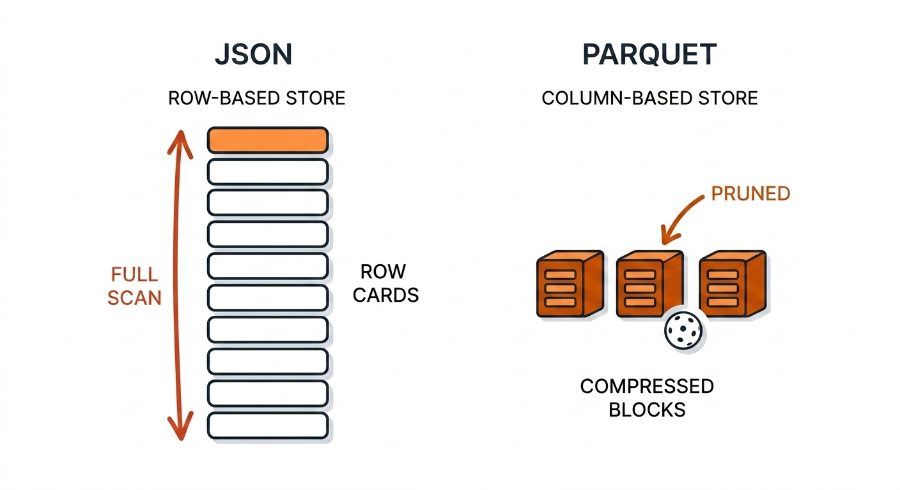
Payoff: season-scale analytics on the analyst's own machine — no cluster, no server, no ETL job between the question and the answer.
UC 06 — Data Quality Metadata: The Row That Admits Its Own Doubts
The practical problem: the corpus mixes measured CV rows, scraped rows, and hand-coded rows; without quality columns every number looks equally true. The mechanism is the PBN evidence discipline at row level: evidence_level, evidence_refs, confidence, human_correction, review_required, enforced by a spine gate that refuses rows without evidence refs that resolve. The math is the filter economics: a WHERE evidence_level != 'simulated' predicate costs nothing under column pruning — the expensive side is populating the column (seconds of analyst attention per row), which is why the schema makes the gate structural rather than aspirational. This is the claims-register idea (ch. 2) pushed down to the row.
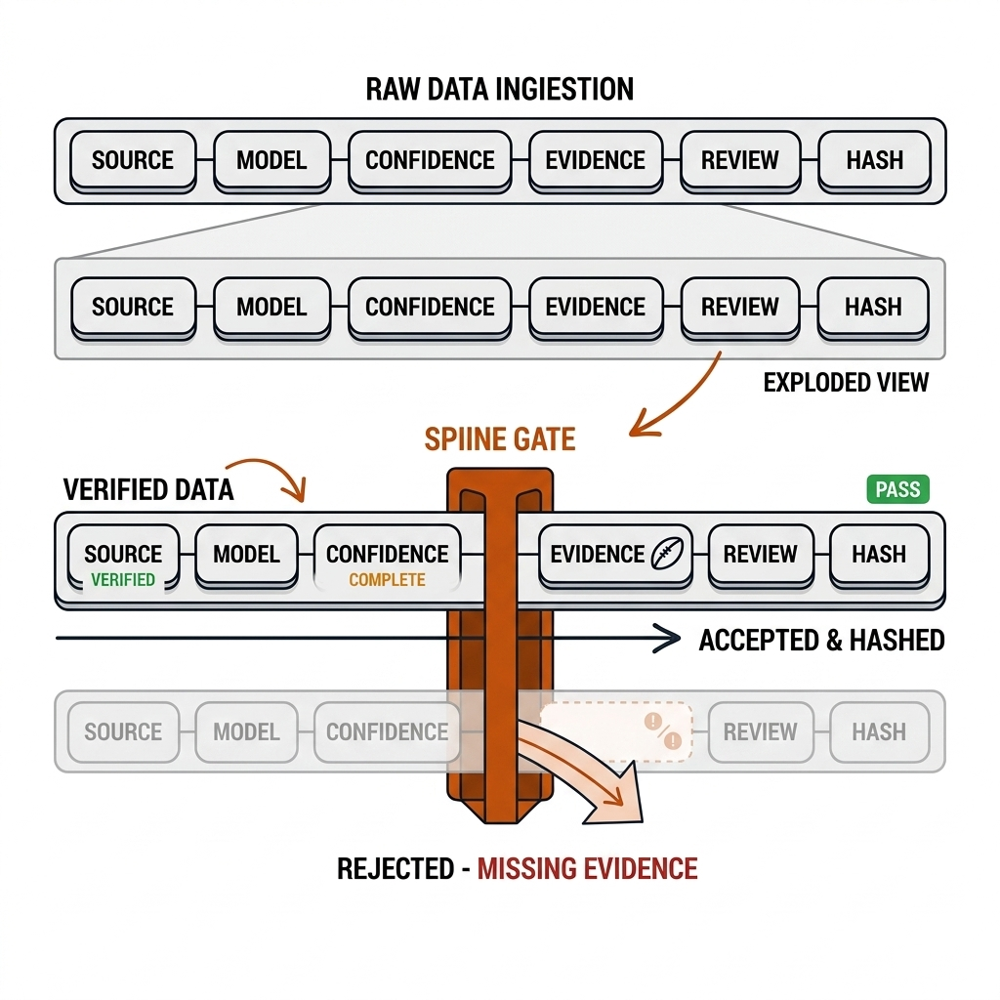
Payoff: every downstream query can exclude simulated and unreviewed rows by default — honesty becomes a schema property, not a writing style.
Category III: Feeding the Downstream Consumers (07-10)
UC 07 — The 2 FPS Sampling Problem (the VLM Feed, ch. 25)
The practical problem: a vision-language model fed one frame every half-second is cheap, and it will almost always miss the contact it is asked to time. The mechanism is sampling arithmetic, not model quality: a serve contact lasts ~4 ms, so at 2fps the probability a sample lands on the contact frame is ≈ 4/500 = 0.8% [verify — practitioner model of contact duration]; the model then hallucinates timing from context. Nyquist framing: resolving a 4 ms event needs ≥250fps for two samples per event — broadcast gives 25-30, so the honest contract is that the VLM narrates events anchored by a higher-rate signal (detector, temporal-difference state machine), never detects them. Any VLM-sourced event row carries low confidence and a review flag.
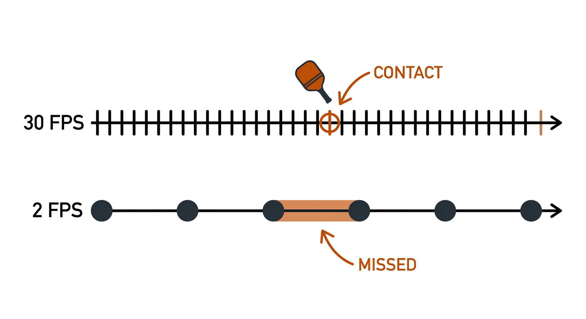
Payoff: the VLM (ch. 25) becomes a narrator on top of evidence instead of a hallucinating detector — the single highest-leverage honesty rule in the agentic stack.
UC 08 — Event Store Design (the Auto-Eventing Feed, ch. 19)
The practical problem: the auto-eventing state machine (ch. 19) needs an event log it can trust, replay, and re-process when the rules change. The mechanism is an append-only, immutable store of event chips ordered by pts_s, consumed by three independent readers — the state machine, the EPV model (ch. 22), and the live cockpit (ch. 28) — with re-processing defined as replay from raw, never as editing history. The math: event volume is small — a pickleball match yields ~500-1,500 events, an NRL match ~2-4k play-the-ball and tackle rows; a season is well under 1M rows [verify — practitioner estimate]. The design constraint is therefore ordering and replayability, not scale: idempotent consumers, monotonic timestamps, and no destructive updates.
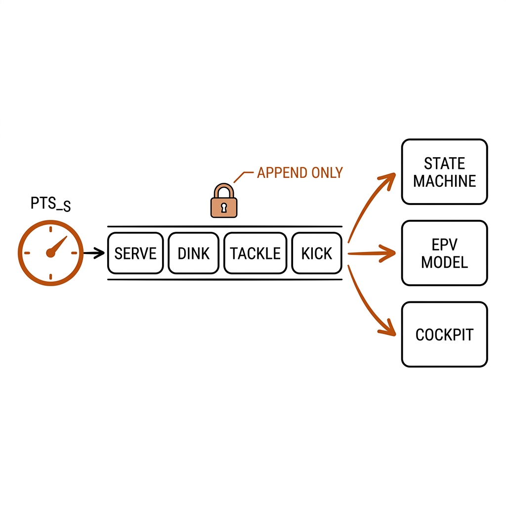
Payoff: a rule change costs a replay, not a re-annotation season — the event history is an asset that appreciates instead of expiring.
UC 09 — Data Lineage: The Provenance DAG (the ch. 2 Evidence Feed)
The practical problem: a number in a report must be traceable to the exact bytes it came from, or it is not evidence. The mechanism is the content-hash DAG: raw → clip → frames → tracks → events → report, each node carrying a SHA-256 badge, each edge a derived_from relation, with re-encodes minting child manifests that point at the parent via supersedes. The math: hashing is cheap and one-time — SHA-256 streams at hundreds of MB/s on Apple Silicon, so a 4 GB match master costs seconds to fingerprint [verify exact throughput on your hardware]; lineage metadata is <1 KB per artifact. The expensive failure is the one the DAG prevents: a re-encode that silently invalidates every hash downstream.
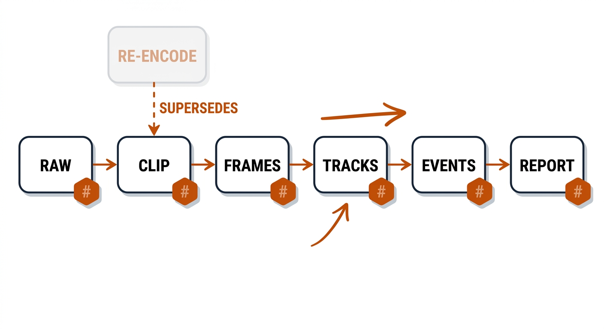
Payoff: the critic agent (ch. 27) can audit any claim back to bytes — lineage is what makes the evidence contract (ch. 2) executable instead of rhetorical.
UC 10 — The Reproducibility Contract (the Lab Feed, ch. 32)
The practical problem: a claim in this book must be re-runnable by a stranger, or it is marketing. The mechanism is the contract card: pinned inputs (random seed, weights SHA-256, ffmpeg version, fixture IDs) on one side, outputs (metrics.json, golden-fixture results) on the other, with CI re-running the fixture suite on every change and golden outputs re-blessed only deliberately, with a commit message naming the model change. The math: the fixture suite costs seconds per run — six frames through the detector at interactive rates — so the contract is cheap enough to run on every commit; a full-lab re-run is minutes. The claims register audit (lab/claims_register.py, ch. 32) holds the bar: 24 claims, 0 problems.
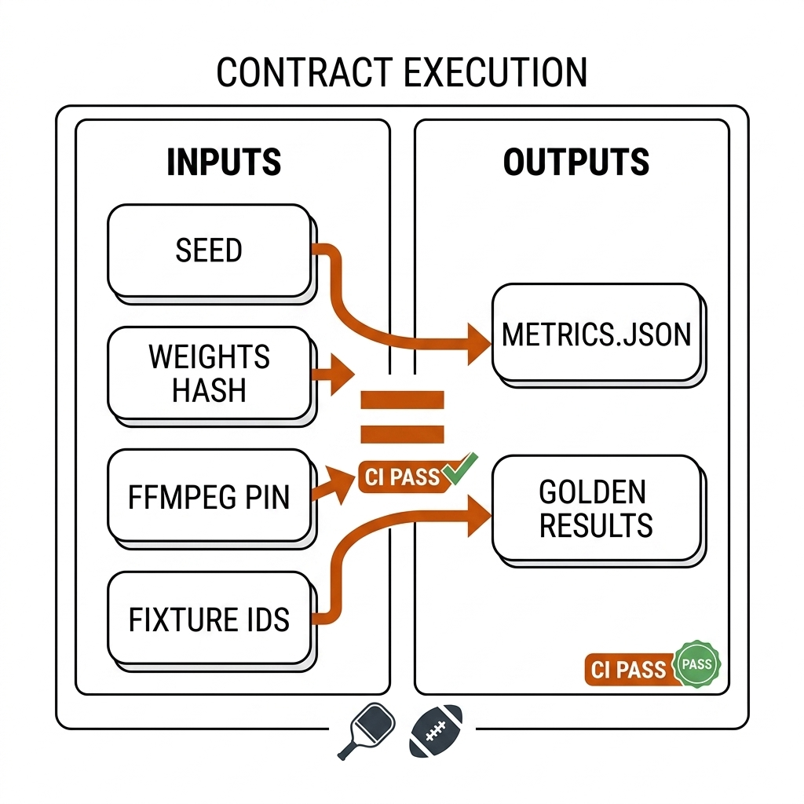
Payoff: "it works on my machine" becomes "it passes the contract" — the difference between a demo and a lab, and the foundation the whole book's claim audit stands on.
What These Add to the Pipeline
The ten cases are the chapter's deliverables to the rest of the book: the spine and event store (UC 01, 08) feed the auto-eventing state machine (ch. 19) and the EPV surface (ch. 22); the sampling contract (UC 07) bounds what the VLM chapter (ch. 25) may claim; the lineage DAG (UC 09) makes the evidence contract (ch. 2) and the critic (ch. 27) executable; the reproducibility contract (UC 10) is the lab discipline the claims register (ch. 32) audits. The NRL-set rows (UC 03) are the rugby league data contribution; the pb-003 fixture (UC 02) is the pickleball one.
5.9 What I Would Measure Next
- Cross-check TorchCodec vs PyAV frame counts on the 900-frame clip (both should match the ffmpeg frame map; the ABI and API differences are the only expected variance).
- DuckDB query plan over 1M+ synthetic track rows to size the spine for a full season.
- Build the 596-frame pb-003 annotation block and measure inter-annotator agreement on ball visibility and contact frames.
- Produce the first NRL-set rows for one manually coded set-of-six from the nrl-001 clip, with Rugby League Project IDs and CV-derived play-the-ball coordinates.
5.10 Sources
- kloppy (PySport) — BSD-3; SPADL schema; FIFA EPTS standard; MOTChallenge CSV.
- Verified finding:
decordunmaintained; PyAV / TorchCodec recommended (2026-08-30). - Lab:
lab/w1_lab_data_engineering.py→experiments/c05-ingest/outputs/{manifest.json, spine.duckdb, checks.txt}. - Dataset contribution:
dataset/pb003/pb003.schema.json+README.md. - Rugby data: nrlR (CRAN)
https://cran.r-project.org/package=nrlR; UselessNRLStatshttps://github.com/uselessnrlstats/uselessnrlstats; Rugby League Projecthttps://www.rugbyleagueproject.org. - FFmpeg official documentation:
https://ffmpeg.org/ffmpeg.html(seek semantics,-accurate_seekdefault).